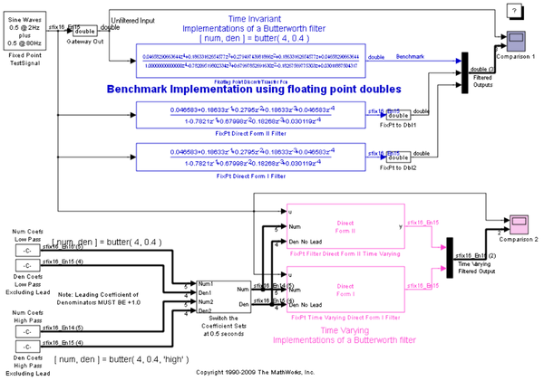

Fixed-Point Filters
Sample bit-true implementations of fixed-point direct type I and II filters with time-varying and time-invariant coefficients are presented. These filters use the fundamental capabilities in Simulink® Fixed Point™ and work with the autoscaling tools in Simulink Fixed Point.
Note: the Filter Design Toolbox™ and Signal Processing Blockset™ leverage this capability and extend it by providing high level design tools and multirate implementations for complex real-time signal processing applications.
